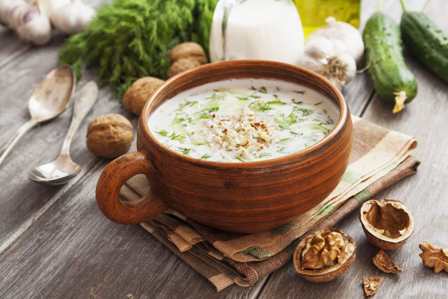
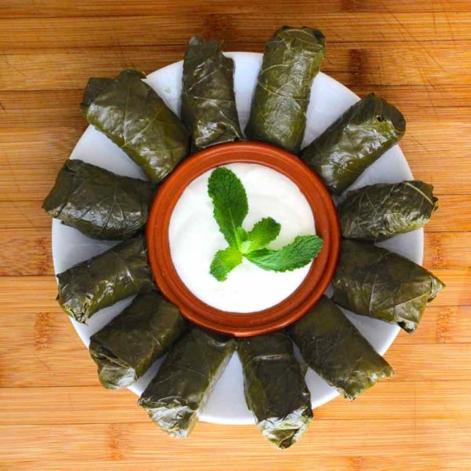
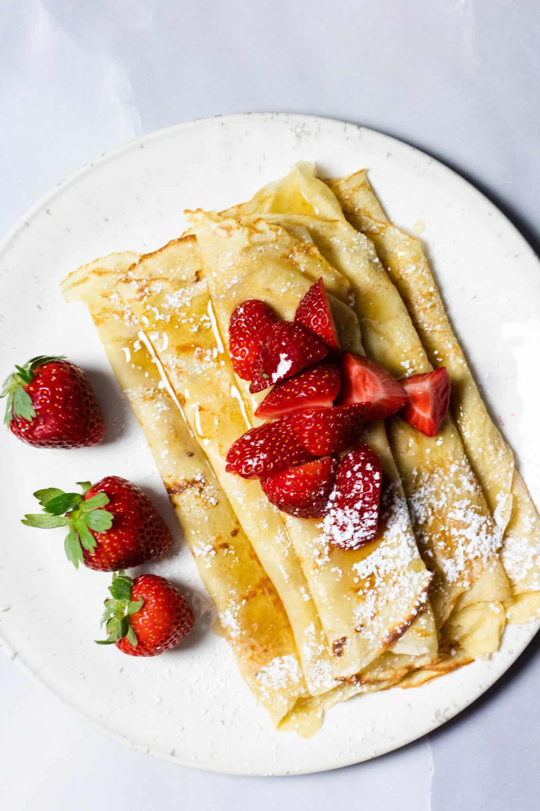
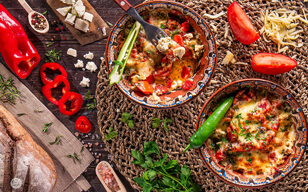
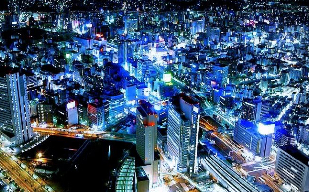

Food is life and everyone loves food. In this one page, I would like to share some of my favorite dishes in Bulgarian Cuisine and why I miss my home country a lot! First of all fun facts for Bulgaria! In Bulgaria, people nod their head to say no and shake their head to say yes. Bulgaria has one of the highest population declines in the world due to emigration. 170 towns are on the verge of extinction. Bulgaria produces about 70% of the worlds rose oil. There are annual rose festivals in which towns display their beautiful roses and choose rose queens!
Bulgaria is home of one of the best yoghurt in the world and has the most hospitable population. Bulgaria is a nation that has retained its national identity, history, culture and tradition – it has certainly not sold out to the west. This means that it’s an authentic country where you really will experience a totally different way of life. Contrast Bulgaria with somewhere like southern Spain or Cyprus, and you’ll know what we mean! I would like to share some of my favorite dishes from Bulgaria!
Tarator

"This cold soup is among Bulgarians favorite foods for the summer. It is served as a first course instead of a salad or between meals as refreshment. You might even see it served in a glass. Most men here say it goes great with a glass of cold rakiya (Bulgarian grape or fruit brandy) or Ouzo. It is so refreshing for the summer, everyone should try it!"
Dolma

Dolma (Ottoman Turkish طولمه) is a word that comes from the Turkish verb dolmak, which means “to be stuffed”. It is a family of recipes of stuffed vegetable of leaves born in the kitchens of Otoman Empire and it is surrounding regions. It is absolutely healthy and amazing dish from the Middle East. "Abdolutely one of my favorite appetizers!"
Palachinki

A palačinka (plural: palačinky, or palatschinken) is a light and thin crepe that comes straight from the southern Balkans in Macedonia. Palačinky are widespread in Central and Eastern Europe. Palačinky are eaten hot or cold, sweet or savory (or plain) as a main course, as a dessert, or as a snack. They are served as is, or filled and accompanied by a garnish.
WHY YOU SHOULD TRAVEL BULGARIA?
With more and more people getting out in the mountains and using holidays to trek and climb it is becoming increasingly difficult to find good locations away from the crowds. Travellers are searching for new destinations for their outdoor preferences, destinations with beautiful unspoiled nature and mountain ranges which are in a safe location, reasonably priced and easily accessible.
The Balkan peninsula is one of those places – largely undiscovered and untouched by progress with beautiful alpine mountains but without the crowds of the Alps.
That's why Bulgaria must be your next Holiday Destination!
Bulgaria is rated 3rd in Europe for its quantity of important cultural historical monuments. It is a destination with numerous important historical sites, from the dawn of European civilization to modern times. Bulgarians are very proud of their heritage, stories and folklore still form an important part of their lives where legends and traditions are passed from generation to generation.
Explore thousands of preserved architectural landmarks from Thracian, Greek, Roman, Byzantine, Medieval Bulgarian and Ottoman civilizations across the country. This history is also captured in poetic songs, rituals, music, dance, costumes and jewellery.

Bulgarian food is fresh and very tasty, famous for its quality vegetables and dairy products and its variety of mild spices. Pork and chicken tend to be the most common forms of meat, though fish and veal dishes are also popular and lamb has a special traditional place in Bulgarian cooking. And of course no visit would be complete without tasting the world famous Bulgarian wines.
Bulgarian Food is a mix of what grows well locally, especially dairy products and certain herbs and spices we’ll discuss below. Also, dishes influenced by Turkey, as Bulgaria was occupied by the Ottoman empire for some 500 years. You’ll even find elements in Bulgarian food culture going back to 1,500BC when parts of modern day Bulgaria were ruled by the Thracians, a society well known for making wine.

Aside from the above, Bulgaria offers great nightlife and entertainment and pristine coastline with beautiful sandy beaches and clear seas, so even if your trip is focussed on the mountains adding a few days on at the end to relax on the beach is very easy, you're just a short internal flight away from the Black Sea or if you prefer to see more of the country, its a 5-6 hour road trip from Sofia to the coastline.
Bulgaria offers a vibrant nightlife scene with a variety of options to suit different tastes and preferences. There are many nightclubs and bars, beach clubs, life music venues,
nightlife district, casinos, festivals and events. So whenever you visit Bulgaria, surely you won't have boring time. I would highly suggest to visit my home country during the summer months June till end of September, as there are so much to do. My preferred month though is end of September, as the water is still warm, pleasant to swim and the prices are not too touristy.